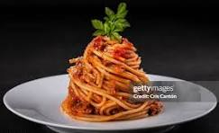

Spaghetti Recipe

This spaghetti recipe is a classic Italian dish that is sure to please. With al dente pasta, rich marinara sauce, and a sprinkle of parmesan, it's a comforting meal for any occasion.
Ingredients:
- Spaghetti: A package of your favorite spaghetti pasta.
- Sauce: A large jar of your favorite marinara or pasta sauce.
- Meat (optional): Ground beef, turkey, or sausage for a meaty sauce.
- Cheese: Grated Parmesan cheese for serving.
- Seasoning: Salt, pepper, garlic, and fresh basil (optional).
Steps:
- Cook the spaghetti according to package instructions until al dente. Drain and set aside.
- In a large skillet, heat the marinara sauce over medium heat. If using meat, add it to the skillet and cook until browned.
- Add the cooked spaghetti to the sauce and toss to combine. Season with salt, pepper, and garlic to taste.
- Serve hot, topped with grated Parmesan cheese and fresh basil if desired.
Home